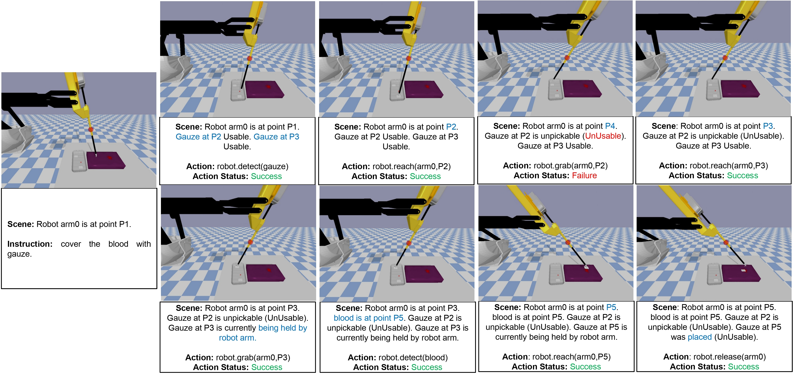
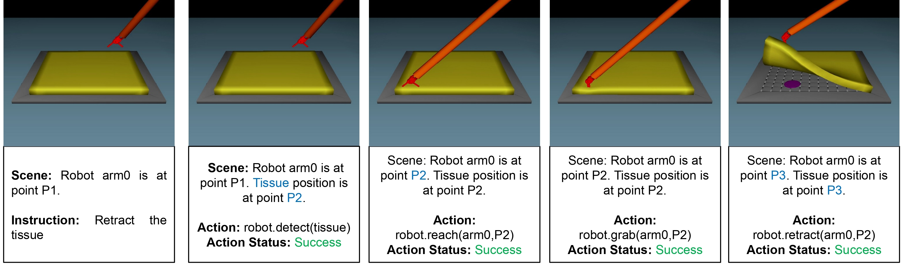
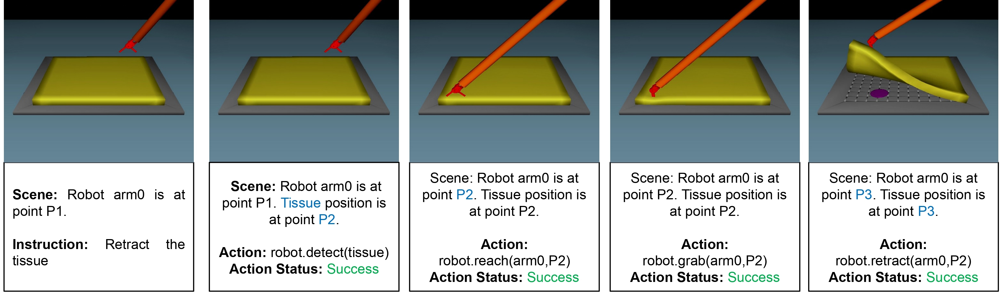

Be My ASSistant: Exploring LLM Empowered Interactive Surgical Assistant for Surgical Sub-Task Automation
- Gokul Adethya T
- Lalithkumar Seenivasan
- Ashwin Krishna Kumar
- Mobarakol Islam
- Hongliang Ren
Abstract
In this work, we introduce MASS, a novel large language model (LLM)-driven framework for surgical task and motion planning. MASS is designed to interpret high-level natural language surgical instructions and convert them into precise robotic actions, capable of operating in both single-arm (task 1, task 3) and dual-arm (task 2) setups. We evaluate this framework in two different simulation environments, Lapgym and Surrol, leveraging a unified skill library that allows for flexibility, scalability, and adaptability across various hospital settings and robotic systems. MASS seamlessly generalizes across different surgical configurations, including systems with varied control architectures. A key strength of MASS lies in its ability to disentangle the LLM's high-level decision-making from the system-specific actuation sequences, making the overall planning and execution process more transparent and interpretable. This separation ensures that the LLM focuses on action prediction, while the execution remains tailored to the specific robotic setup, enhancing both clarity and efficiency in surgical task planning.
Approach
The MASS setup involves an embodied robotic agent tasked with executing high-level natural language surgical instructions. This agent can access k short-horizon skills across s surgical setups from a library of pre-trained policies πks ∈ Π trained using Reinforcement Learning and Imitation Learning. The common skills between tasks are mapped under common primitives with the textual label l(πks) and chosen based on the tasks present. A pre-trained LLM acts as the "planner" responsible for determining a sequence of these skills to fulfill the given instruction.
The planner can access textual feedback from the environment, including action status and passive feedback about object states (inner monologue style). This feedback can be procedurally generated using object recognition and image captioning methods or replaced with a human in the loop. Unlike inner monologue, we currently do not use active feedback (e.g., VQA). Instead, humans control actions and adapt instructions based on requirements.
The planner has the following phases:
- Filtering and CoT
- Action scoring and choosing strategy
- Execution
This setup consists of three tasks utilizing both Lapgym and Surrol environments. The configurations are as follows:
-
Task 1: 1 Armed - Retract the Tissue
The setup contains an end-effector and a tissue. The agent needs to detect the location of the tissue, reach, grab, and then retract it. -
Task 2: 2 Armed - Retract the Tissue and Reach the Tumor
This setup supersets Task 1 and has an extra end-effector to reach the tumor and a tumor below the tissue. After completing the retraction similar to Task 1, the agent needs to perform detection to check if the tumor has been revealed and then reach it. -
Task 3: 1 Armed - Cover the Blood with Gauze
The scene has 2 gauze in a tray and a blood patch lying on top of the tissue, which is on a table. The assistant is supposed to detect the gauze and blood and perform a pick-and-place operation to complete the instruction. If both gauze fail to be picked, a new gauze can be further requested.
- SayCAN (Open Loop): Resembles SayCan but without filtering or CoT phases. The model receives the initial instruction, scene description, and past actions. Detection is triggered initially since the LLM operates in an open loop and cannot update during execution. All action permutations are predefined.
- SayCAN with Scene Update (Closed Loop): Builds on the open-loop strategy by updating the scene description and history after each step. The action status remains hidden. Action permutations grow as new states and objects are discovered.
- SayCAN with Scene and Action Status Update (Inner Monologue): Extends the closed-loop strategy by also updating the action status, resembling the Inner Monologue setup.
- SayCAN with Scene and Action Status Update and Action Filtering + CoT: Expands on the Inner Monologue setup by adding CoT and top-5 action filtering. The model generates thoughts and selects the top 5 logical actions in one step. Only valid options among these actions are used, making the process more efficient and interpretable.
Results
Task 3: 1-Arm Gauze Pick-and-Place on Blood Setup
In the 1-Arm Gauze Pick-and-Place on Blood Setup, the primary task is to identify the gauze and the blood patch, and then perform a successful pick-and-place operation to cover the blood with the gauze. Several types of failures were observed under different conditions:
- Object_scene_status: A notable failure occurs when the system forgets to release the gauze after successfully reaching the target location. This prevents task completion even though the initial stages were successful.
- Object_scene: The agent sometimes fails to reach the gauze before attempting to grab it, making the gauze unpickable. Additionally, it fails to detect when the gauze has not been picked up and proceeds with the place operation as if the pick was successful.
- Object_nly: When the scene is not updated during execution, the agent does not recognize that the gauze is unpickable, leading to repeated failed pick attempts.
- Temperature Sensitivity: Under certain conditions, such as when the temperature parameter is set to 2, the system consistently fails to execute the task correctly.


Task 1: 1-Arm Tissue Retract Setup
In the 1-Arm Tissue Retract Setup, the task requires detecting, reaching, grabbing, and retracting the tissue. Observations indicate partial failures under specific strategies:
- Object_nly and Object_scene: The agent assumes that the tissue needs to be released immediately after the retraction step. While the retraction is successful, the premature release results in only a partial success for the task.
 

Task 2: 2-Arm Tumor Retract Setup
The 2-Arm Tumor Retract Setup extends the previous task by introducing a tumor that needs to be reached after retracting the tissue. Failures in this task highlight issues related to coordination and scene understanding:
- Object_scene: The agent frequently tries to reach the tumor using the same arm (arm0) that is responsible for the tissue retraction, causing the task to fail. In some cases, it retries this approach multiple times before halting due to a lack of action status updates. Additionally, the agent may attempt to detect the tumor before retracting the tissue or assume that the tumor needs to be grabbed rather than reached.
- Object_scene_status: Similar to the previous case, the agent attempts to detect the tumor without completing the tissue retraction, leading to failure.
- Object_nly: When the scene is not dynamically updated, the agent cannot detect the tumor's position, making it impossible to complete the task.
- CoT_object_scene_status: Even with Chain-of-Thought (CoT) reasoning, the agent sometimes mistakenly assumes the tumor needs to be grabbed after reaching it, resulting in task failure.